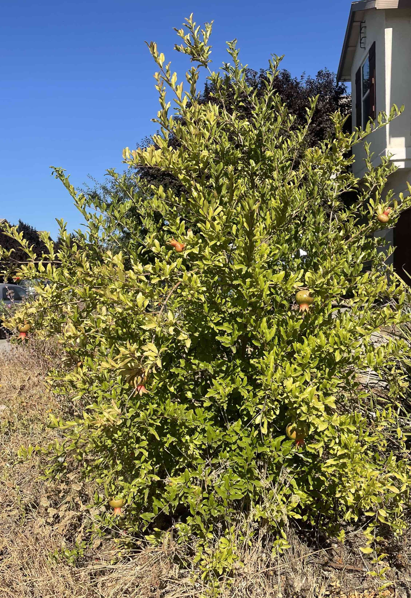
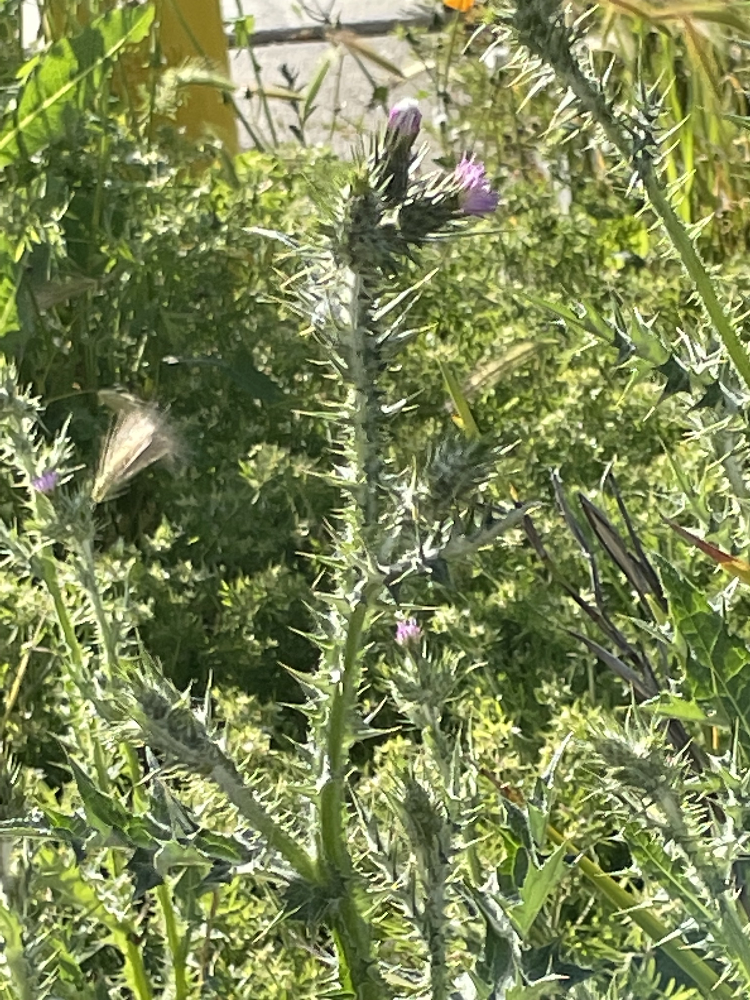
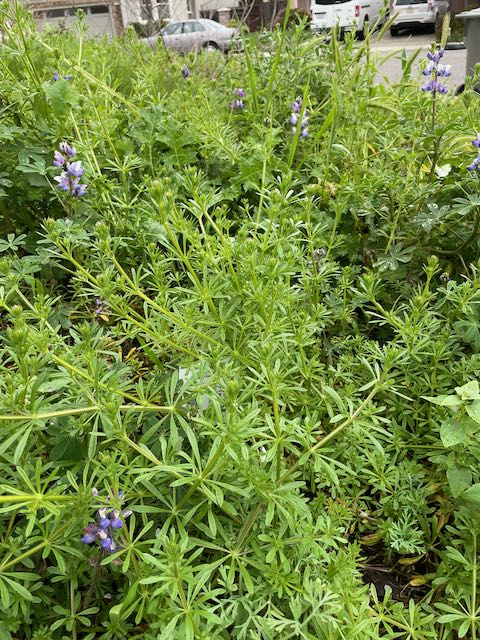
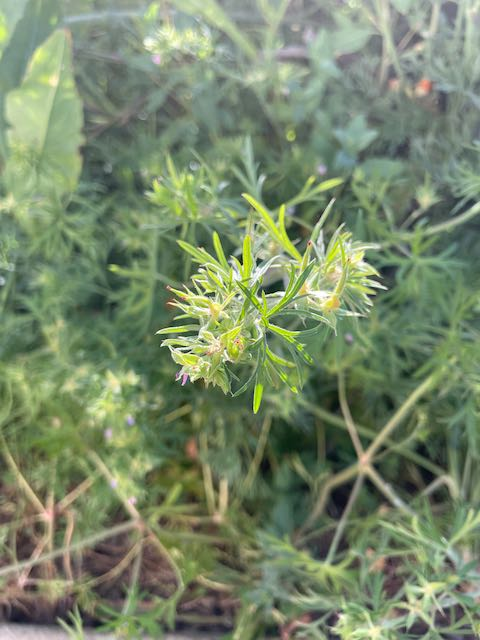
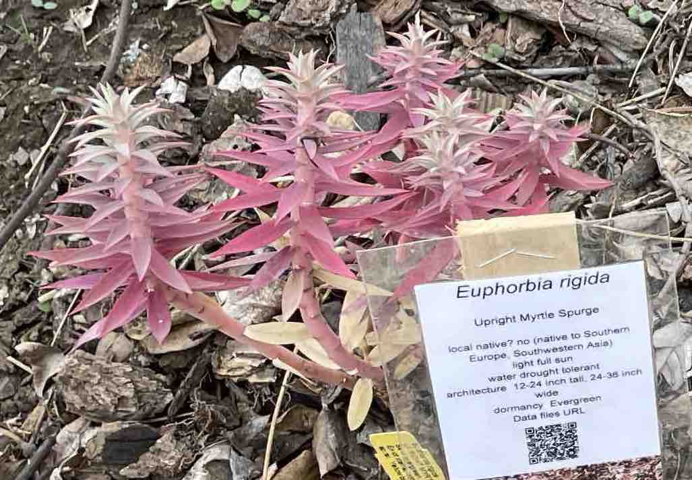
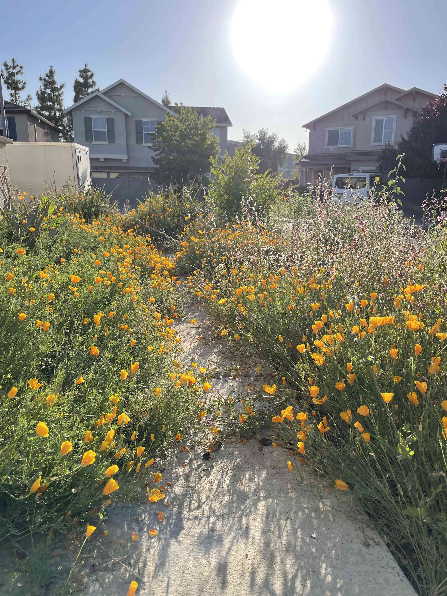
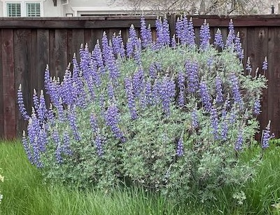
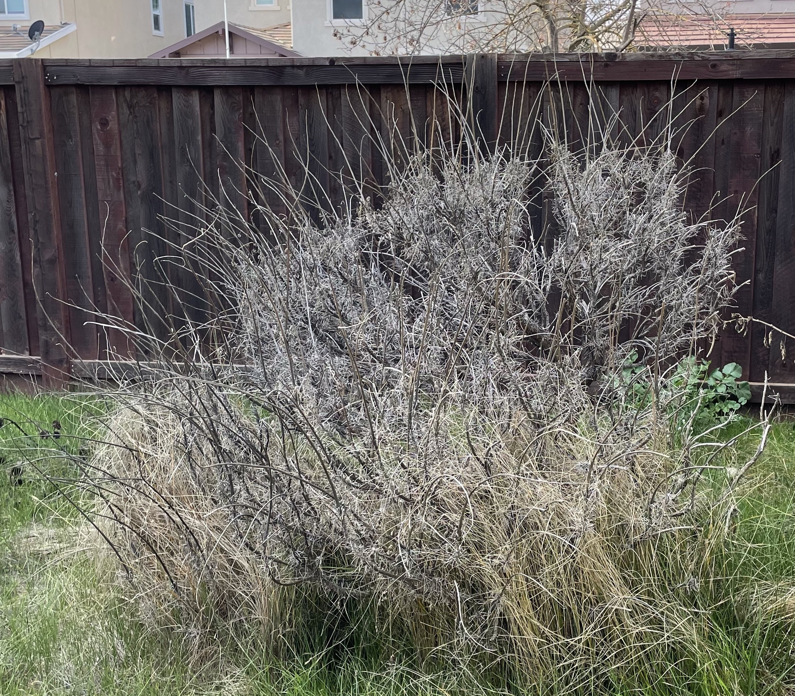
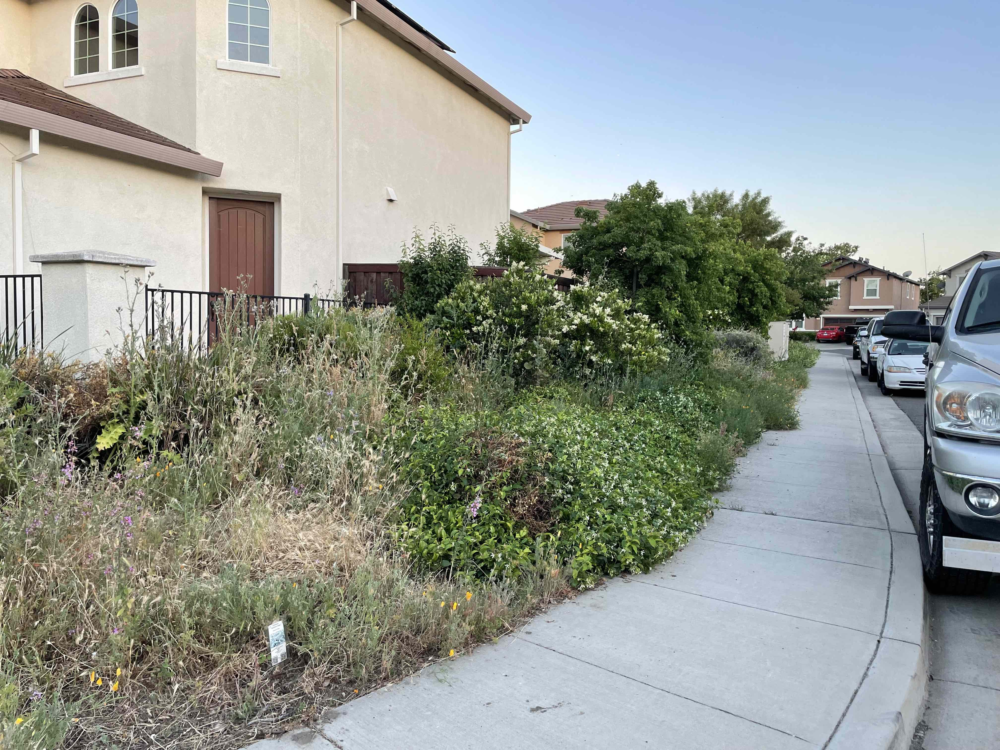
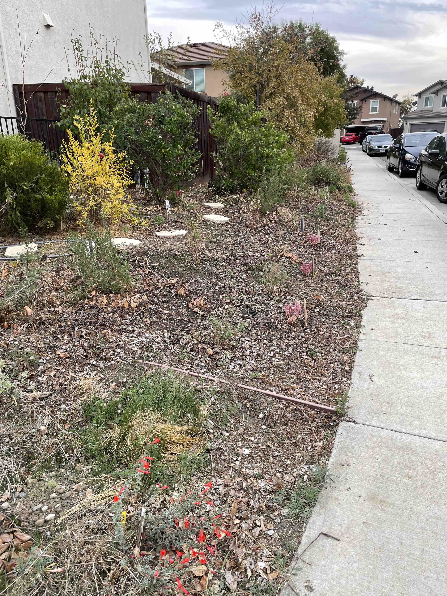

Pomegranate fruits
(Fig.1) Possibly due to plenty of rain last winter, we had bunch of Punica granatum fruites this year (Fig. 1). We learned waiting fruits with cracks outside resulted ripen and sweeter fruits.
Sequestering carbon dioxide by many weeds this year
(Fig.2)
(Fig.3)
 (Fig.4)
(Fig.4)
The last growing season from late winter to spring we had lots of Thistle (Fig.2), Galium porrigens var. tenue (Graceful Bedstraw) (Fig. 3), and Vicia sativa (Fig. 4).
We hand picked lots of those “weeds” every weekend and collected them into an organic waste container, which is incredible source of Yolo county compost. However, I learned perfect removal of weeds from the ground was not good for soil health (see below).
 (Fig. 5)
Geranium dissectum (Cutleaf Geranium) (Fig. 5) has been spread in my front yard, which was removed this summer by hand picking them because they are European native.
Extending native plant area and more plants
Since we pulled out as many Thistle as possiblee along fences on the west side, the soil became so dry that the soil became hard, which was not good. This year, learning from Helen Atthowe’s book, I decided not to pull out weed plants rather chopped them and feed them to plants as living mulch. To improve soils that area, I transplanted three of two foot x 1 feet sized Carex praegracilis grown in the backyard in addition to sprinkle stored California central valley pollination seed mix from and collected Arroyo Lupin (Lupinus succulentus) seeds.
(Fig. 6)
Next to redesign the corner of my front yard, four or five small bushy plants had been removed that had been planted and five or more similar plants have been trimmed down to a half. Along the sidewalk, three Euphobia rigida plants (not CA native) (Fig. 6) were plannted and seven California Fuscha were planted as a continued line of California Fuscha plants in the first front yard. Furthermore I planted Toyon to make bushes with flowers.
 (Fig. 7) Along fences leading to the front door, six California Fuschia plants were planted in a linear row. I expected lots of California poppy blooming during spring between the fence and California Fuschia plants (a half foot) because the last year lots of California poppy plants had flowers in that area (Fig. 7).
(Fig. 8) (Fig. 9) Since a ten year old big silver lupin plant (Fig. 8) had been died and there are less diversity on west side of the backyard (Fig. 9), three evergreen bushy plants were planted; Toyon, Acrostaphylos manzanita “Dr. Hurd”, and Ceanothus.
Before and after converting to native plant garden at west side of my house
(Fig. 9)  (Fig. 10)
Two native plant species seeds
At the final step of this year’s project I sprinkled seeds of two native plants that were recommended in CNPS (California Native Plant Society) to increase diversity of my yards; Lasthenia californica (California Goldfields) and Castilleja exserta (Owl’s Clover) from Nature’s Seed.
Plants not found this year
During planting period I watered two or three times a week until those plants were established, which increased only 5 % of water usage.